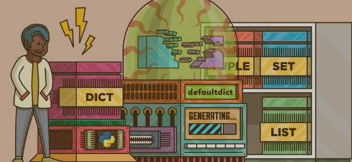

Within software solutions describe, implement and analyze data structure techniques such as lists, trees, hash tables, graphs, along with sorting and searching algorithms.
Project: P&A Home Inventory Log
The P&A Home Inventory Management Program is a software solution designed to showcase the practical implementation of fundamental data structure techniques such as lists and dictionaries (acting as hash tables) in a real-world context. It employs sorting algorithms, exemplified by the bubble sort algorithm, for organizing product data.
Project: Task List
This To-Do List Application is a practical software tool designed to help users effectively manage their tasks and priorities. Developed using Python's Tkinter library, it provides a user-friendly graphical interface for task input, display, and completion. The application harnesses several data structures and algorithms to enhance task management: